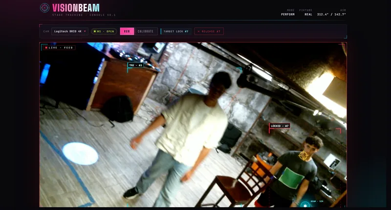
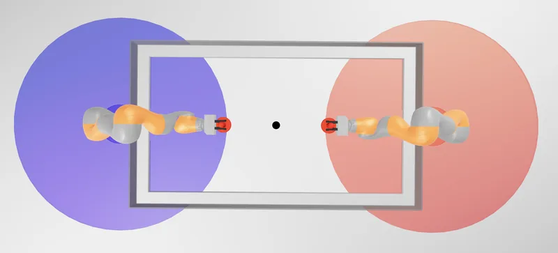
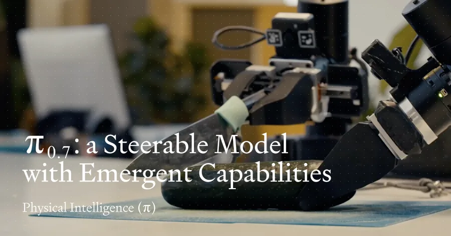
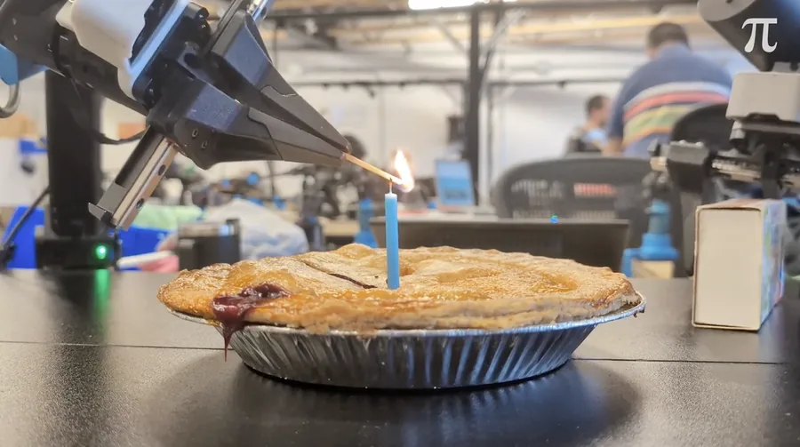
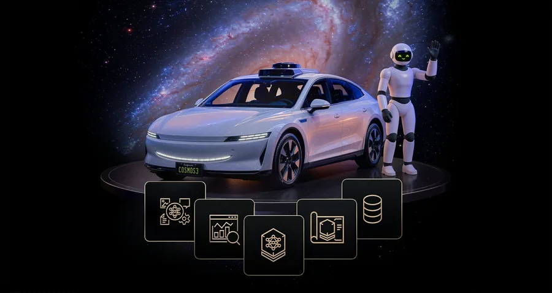
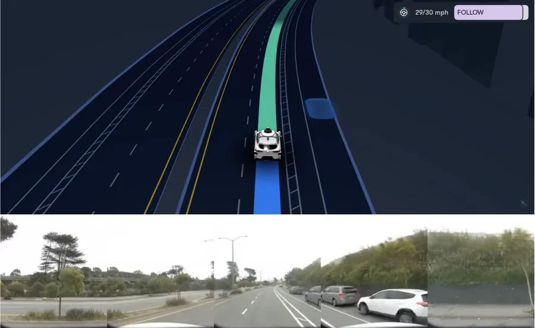
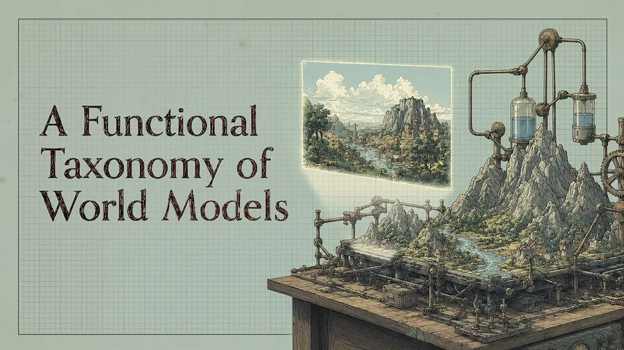

About
Hi! I'm Ryan Quinn, a fourth year undergraduate at MIT and researcher at MIT CSAIL. I'm currently interested in exploring how machines understand and interact with the physical world. My research interests include multimodal 3D reconstruction, video planning for embodied agents, and extracting latent action models from video.
Previously, I was an undergraduate researcher in both the Algorithmic Design Group and the Networks & Mobile Systems Group of MIT CSAIL. I've also interned as a software engineer at Coinbase, Amazon, and Novelis.
Outside of work, I am a semi-professional DJ and music producer. I also love playing soccer, boxing, and going to music festivals or concerts. Feel free to reach out if you'd like to chat!
Experience
-
Undergraduate Researcher MIT CSAIL — Cambridge, MA Marine Robotics GroupSep 2026 – Present
-
Software Engineer Intern Coinbase — New York, NY Enterprise - Sales & TradingMay 2026 – Aug 2026
-
Undergraduate Researcher MIT CSAIL — Cambridge, MA Algorithmic Design GroupOct 2025 – Jan 2026
-
Software Development Intern Amazon — Seattle, WA Personalization Team - Generative RecommendationsMay 2025 – Aug 2025
-
Undergraduate Researcher MIT CSAIL — Cambridge, MA Networks & Mobile Systems GroupJan 2025 – May 2025
-
Global Software Engineer Novelis — Oswego, NY Global Automation TeamJun 2024 – Feb 2025
Projects

VisionBeam: Vision-Driven Camera Interface for Autonomous Stage Lighting
May 2026
Autonomous stage lighting that identifies and tracks the most active performer through a combination of deep learning object detection and classical motion analysis.

PuckBot: Predictive Interception and Striking Control for IIWA Air Hockey
November 2025
Robotic simulation framework that utilizes 2D kinematic prediction and inverse kinematics to estimate air hockey puck trajectories.
Reading List
Papers, posts, and current releases.
GEN-1.5: Embodied Foundation Models are One-Shot Learners
Generalist's robot foundation model that learns a new physical task from a single demonstration placed in its context window, no gradient updates required, the first model shown to exhibit one-shot and few-shot learning of dexterous skills at scale.

π0.7: A Steerable Model with Emergent Capabilities
Physical Intelligence's general-purpose robotic foundation model that combines language, metadata, and visual subgoals to generalize across tasks and embodiments without fine-tuning.
Atlas: A World Model for Spatial Intelligence
World Labs' omni world model, pretrained from scratch on text, images, video, and 3D, that unifies world generation, 3D reconstruction, and space-time simulation with pixel-perfect camera control in a single shared spatial context.

Real-Time Action Chunking with Large Models
Treats chunk transitions as an inpainting problem, letting VLA policies act smoothly and continuously even under high inference latency.

NVIDIA Cosmos 3
A family of omnimodal world models that unify physical reasoning, world generation, and action generation into a single mixture-of-transformers architecture.

The Waymo World Model
A frontier generative model built on Genie 3 for hyper-realistic autonomous driving simulation with multi-sensor camera and lidar outputs.
Read MoreLarge Video Planner
A video foundation model for robotics that generates video plans and retargets them into executable robot motions.
The Bitter Lesson of Computer Vision
Vincent Sitzmann argues that 3D representations and conventional CV tasks will become obsolete with advances in perception-action frameworks.

A Functional Taxonomy of World Models
Fei-Fei Li divides world models into three functional categories (renderers, simulators, and planners) and argues simulation is the link between visual generation and embodied action.